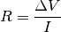

Resistance Calculation¶
| Authors: | Jose Guzman |
|---|---|
| Updated: | 08 November, 2017 |
The resistance can be calculated using Ohm’s law. Currents passing through the pipette will be proportional to the applied voltage difference. This proportional factor is the resistance.

In voltage clamp, resistance can be calculated by recording the current once the voltage difference is known. This Python routine should calculate the current difference, and resistance will be calculated given the voltage amplitude.
The resistance function¶
Note
You can find different routines to calculate the resistance in the file charlie.py. This file can be found in the Stimfit program directory (C:\Program Files\Stimfit in Windows or /usr/lib/python2.5/site-packages/Stimfit in GNU/Linux, assuming python2.5 is your current python environment). The name charlie.py is in acknowledgment to Charlie, for her contribution to the development of the given routines.
Note that this function assumes that current is recorded in pA. It sets the stf cursors (peak and baseline) to calculate the current deviation in response to the voltage difference. Finally, the voltage amplitude should be entered in mV.
import numpy as np
# stimfit python module:
import stf
def resistance( base_start, base_end, peak_start, peak_end, amplitude):
"""Calculates the resistance from a series of voltage clamp traces.
Keyword arguments:
base_start -- Starting index (zero-based) of the baseline cursors.
base_end -- End index (zero-based) of the baseline cursors.
peak_start -- Starting index (zero-based) of the peak cursors.
peak_end -- End index (zero-based) of the peak cursors.
amplitude -- Amplitude of the voltage command.
Returns:
The resistance.
"""
if not stf.check_doc():
print "Couldn't find an open file; aborting now."
return 0
#A temporary array to calculate the average:
set = np.empty( (stf.get_size_channel(), stf.get_size_trace()) )
for n in range( 0, stf.get_size_channel() ):
# Add this trace to set:
set[n] = stf.get_trace( n )
# calculate average and create a new section from it:
stf.new_window( np.average(set,0) )
# set peak cursors:
if not stf.set_peak_mean(-1): return 0 # -1 means all points within peak window.
if not stf.set_peak_start(peak_start): return 0
if not stf.set_peak_end(peak_end): return 0
# set base cursors:
if not stf.set_base_start(base_start): return 0
if not stf.set_base_end(base_end): return 0
# measure everything:
stf.measure()
# calculate r_seal and return:
return amplitude / (stf.get_peak()-stf.get_base())
Code commented¶
The stf functions stf.set_base_start() and stf.set_base_end() set the corresponding baseline cursors. The functions stf.set_peak_start() and stf.set_peak_end() set the corresponding peak cursors. These functions returns the Boolean True if the cursor was properly set in the desired position, and False if the cursors can not be set (for example, they are out of the limits of the trace). This was designed to provide a control of the cursor positioning.
It is a good practice to test the correct position of the cursors with the conditional sentence if.
>>> if not stf.set_base_start(base_start): return 0
- if the stf function returns False the if condition will be True (not False means True). Our defined function will be finished with return and give the value 0.
- In contrary, if the stf function returns True the if condition will be False (not True means False). In our function, the if condition will not be executed (does not read the return 0) and continue the operations.
We can enter directly the x-value (e.g ms) as argument, in stead of using the zero-based index of the sampling points. By adding the argument is_time==True to the function we set the cursor in the give time position:
>>> if not setf.set_base_start(base_start,True) : return 0
Now base_starts should be given in units of x (i.e ms). This is more intiutive if you are using the stf interface.
Note
stf.set_base_start(), stf.set_base_end(), stf.set_peak_start() and stf.set_peak_end() do not upgrade the measurements. For that reason, we call stf.measure() (this is analogous to hit Enter in the main window). Thereby the values of stf.get_peak() and stf.get_base() are updated.
Usage¶
Now, you can use this function for different purposes. For example, you may want to test the value of the series resistance in response to a 5 mV hyperpolarizing pulse. First, let’s assume that your recording has the current peak between the 10700 and 10999 sampling points. You should set the baseline (for example between 0 and 999) and then peak between 10700 and 10999. After that, and given that 5 mV is the voltage difference, you type:
>>> spells.resistance(0,999,10700,1999,-5)
Note that charlie.py has a routine called r_in(amplitude=-5) that does exactly this.
In the same way, if you wanted to calculate the value of the seal resistance (assuming this is the smallest resistance in the circuit, so no current will flow through any other resistance), you could test it with a larger voltage pulse.
>>> spells.resistance(0,199,1050,1199,50)
Again, the file charlie.py has a routine called r_seal(50) to calculate the seal resistance. Just change the parameters (baseline and peaks) to adapt it for your recordings.